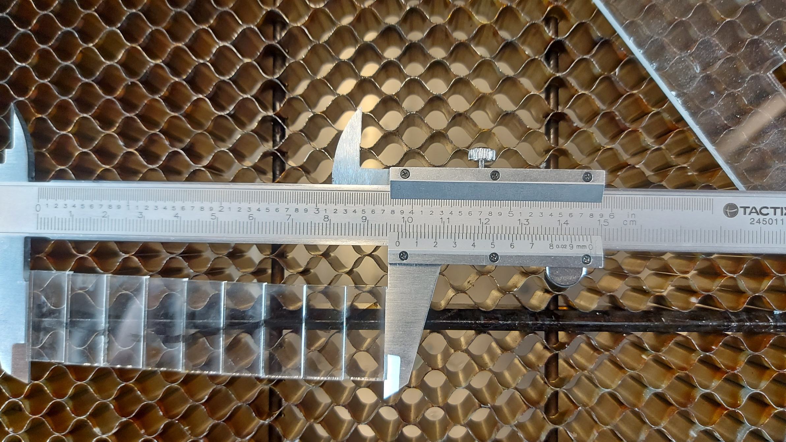
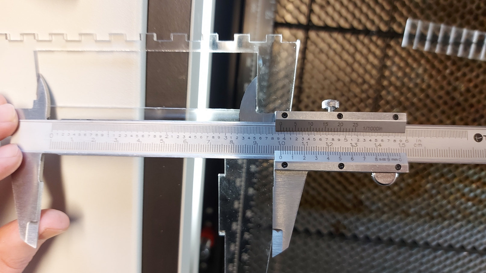

Project 2 - Computer aided cutting
Project Description
The project is split into two parts, cutting out a vinyl sticker, and cutting something out with a laser cutter. The laser cutter only cuts in 2D so the aim of the project is to make a 3D object consists of press fitted sheets of material.
Part 1 - Vinyl cutting
I happened to need a sticker of the Team Spark logo since I had removed the one that was previously on the nosecone of the car to make some changes. The shop had some vinyl film that looked like the correct color so I cut out the logo. I found a .svg file of the logo on the Team Spark shared drive which I used. Once the film was positioned in the cutter, I used Inkscape to resize the logo to what I wanted and initiated the cut.

As it turns out the color wasn’t quite the same but it’s hard to see the difference because of how close it is. The sticker now resides on the nosecone of Katla.

Part 2 - Kerf determination
Since the part I’m cutting needs to be assembled by press fit, I need to accurately determine the width of the laser cut. This is known as the “kerf” and it’s on the order of hundreds of microns. To determine the kerf I can cut a test plate that allows me to measure multiple widths of the kerf to get a more accurate estimation. Here is a picture of the measurement of the test piece I cut. I have 9 slots, which require 10 cuts to make.
 Here I can measure the outside width and the width of all the blocks together, and the difference between the two measurements is 10x the kerf since I am measuring across 10 cuts. I measured this with vernier calipers and got the width of the blocks as 9.82 mm. The outside width of the slot was 10.01 mm. Now we can calculate the kerf as (10.01-9.82)/10 = 0.019 mm = 190 µm.
The idea
I got the idea for a project from the old steel plate shown below.

This plate is a bolt size chart that was shipped with my kitfox aircraft kit. The plane uses AN spec bolts, which are cadmium plated imperial size bolts. They’re not substantially stronger than 8.8 metric bolts but the cadmium plating gives them an advantage in corrosion resistance and a dull gold color. ANx bolt sizes represent 1/16” size increments. E.g. an AN3 bolt is 3/16” and AN6 is 6/16” = 3/8”. The plate also has length measurements for bolts, which lists the length in inches and, more importantly, the part number length designation. If you need to order an AN4 bolt that is 1 and 1/2” long, this plate makes it very quick to look up the part number for the given length, in this case AN4-14. Let it be known that I absolutley desipise the imperial system and I say that having built an airplane using it, nevertheless, this plate helped me get accustomed to the AN bolts much faster. Having been in Team Spark for a few too many years now, I have come across people who aren’t familiar with metric bolt terminology, and I think such a plate can help them. Another issue I’ve come across in Team Spark is that people don’t know where to return a stray bolt and so they just leave them laying around. From this the idea was born, a box, with slots and holes for people to check what bolt they have and, if they want to put it away, insert it into a slot, where it will fall into a shelf. Since I’m making a box, I may as well put a length measuring scale on it too.
Prep work
From the start of the project, I wanted to nail the fit of the part. For me to do this I had to iterate several times with slightly different kerfs until I got a good fit. In total I made 4 different test cuts. Here are the test pieces I made, simple, samall but get the job done.

I made 3 sets fo these until I was happy with the fit at a kerf of 0.015 mm. I also made a piece to test the raster and bolt holes for tolerance. By this point I had decided that I would only have slots for M4, M5, M6 and M8 bolts in the design since Team Spark primarily uses those sizes. This piece was more of a test as opposed to an iteration since all the bolt sizes fit perfectly on the first try.

The tests revealed that the internal slots were vastly more rigid when assembled. The slots on the edges of plates were acceptible but had more of a tendency to fall apart. Since the goal of the project is to have the part stay together without the use of adhesives, I set out to use internal slots preferably in the design.
CAD work
Given the many slots and inserts in the design, the CAD work was somewhat tedious. I used Inventor for this project since I am most familiar with it. First i made a single solid without any slots and inserts just to get a feel for what was going to work and not work. From this I settleded on the general design of usng two faceplates with different smaller plates connecting them. Here is a picture of that first test part.

Once I had settled on the gerneral design I started making the individual plates as Inventor parts. I started with the things that were defenetele going to be in the design such as the front and back plates and a dividing mid plate. The design gradually developed over a few days of intermittent drawing. Ultimately, I ended up with a few key features. All the slots were on the interior of plates, allowing for increased stiffness and preventing the structure from falling apart. The shelves featured a sloped side to make it easier to pull bolts out. The sloped nature of the shelves also helped with stiffness between the front and back plates. Lastly, I made a small area on the top the the box that can hold miscelaneous items. Here is the completed box.


To make the toolpaths I projected the outline of each plate on a new sketch and copied it into a new part file. To account for the kerf I offset the outside/external loops out and the inside/internal loops in. The offset in both cases is half of the kerf. I made two different cut files, one with two small parts to test the fit before I commited to the full cut. This paid off because in the first cut file I made, I had offset in the wrong direction, giving me a fit that was far too loose.
Cut and Raster preparation
I wanted to have some writing on the part and the most convenient place to add the text was when using Inkscape since I was already passing the cut file through it. The printer accepts SVG files and Inkscape can convert the exported .dxf files from Inventor into that format. The cut lines had to be sized to 0.020 mm wide so the laser cutter would recognize them as cut lines. The cutter rasters all lines and features such as text that are not 0.020 mm thick. This meant that to get the text I wanted I just needed to insert it and place it using Inkscape’s tools. I found Inkscape to be a powerful tool and I’m glad I learned a bit about how to use it, who knows when it will come in useful later. Once the final version was ready, getting it to the cutter was as simple as “printing” from Inkscape on the computed connected to the cutter. Here is a picture of the faceplate in Inkscape

Cutting and assembly
For the cut I used the following settings: speed: 17%, power: 100%, frequency 100%. The tickness was set to 3 mm since thats the thickness of plexiglass I was using. The raster settings were the unedited settings imported from the 300 dpi 3 mm plexiglass preset. The is thickness also set to 3 mm for the raster. Here is a picture of the cutting process happening.

Like my test fit, the fit was perfect, it was a true press fit, just barely enough clearence to force the parts together and sufficiently low clearance for them to slide apart. I had to debur some edges on the faceplate to get it to slide into all the slots on the other parts. It took full force pressing to get the slots all the way into the front plate, and once in position, they didn’t budge. I had figured out that epoxy can be used as an adhesive for plexiglass in case I needed to used adhesive but there was no need. Here is a picture of the completed box